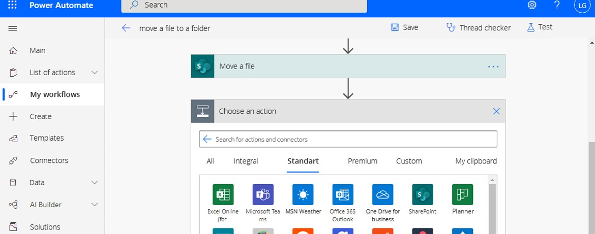

How (and why) to migrate your SharePoint 2010 workflows to Power Automate in SharePoint Online
October 27, 2020

The change has been in the works for a while, but starting November 1st, 2020, Microsoft will begin to remove the ability to run or create SharePoint 2010 workflows from existing SharePoint Online tenants.
Long story short: if your business uses SharePoint 2010 workflows, you need to get yourself an expert in both SharePoint Designer and Power Automate to carry out the migration. If you don’t have one, we at Businessware Technologies can provide seasoned SharePoint experts who will migrate your workflows in no time.
Take a look at our portfolio
We have helped companies successfully migrate their workflows to Power Automate
So what does that mean for your business? Let’s start with the basics.
What is a SharePoint workflow?
SharePoint workflows are a pre-programmed sequence of actions performed automatically that streamline a variety of business processes.
This can include collecting signatures, collating feedback or approvals from individuals and groups, or tracking the progress of standard procedures and their current status.
Essentially, Microsoft SharePoint workflows are intended to save you time, manpower, and therefore money, as well as ensuring consistency and efficiency to regularly carried out tasks in businesses or organisations.
Different SharePoint workflows
There are 5 key kinds of SharePoint workflows:
- Approval Workflows - often the most commonly used type of workflow; it enables you to start an approval chain the moment a document is uploaded.
- Status Workflows - they enable you to automate the status of documents as and when they’re uploaded, then based on the conditions set, automatically change the status of the document based on what happens to it.
- Notification Workflows - where once a condition has been met within the SharePoint environment, a Notification Workflow sends a notification to the relevant member of the business or organisation to update them or prompt.
- Automation Workflows - these enable you to automate specific actions based on what’s occurring within your SharePoint environment, typically ‘piggy-backing’ off of other workflows.
- Custom Workflows - as the suggests a Custom Workflow allows you to create your own mini-program in Sharepoint.
Why are SharePoint 2010 workflows still used?
As of fairly recently, SharePoint Online offered two platforms to create workflows - SharePoint 2010 platform and Sharepoint 2013 platform. The former of the two has a much more extensive functionality than the latter, including much more actions which are used to create workflows.
With the introduction of Power Automate, formerly known as Microsoft Flow, Microsoft wanted to create a more ‘cloud-friendly’ platform and improve the experience of SharePoint Online users. With the three platforms coexisting, there was no need to update legacy workflows until very recently.
What is Power Automate
Power Automate was launched by Microsoft in April 2016, clearly with the objective of replacing SharePoint Designer with a new cloud-based service.
The key difference between Sharepoint Designer and Power Automate is that SharePoint Designer workflows only work in SharePoint Online and only within a single site collection. Power Automate is more flexible and extendable. It enables you to automate actions across a range of applications and services as a result of hundreds of available connectors.
Power Automate will enable you to create the following flows:
- Automated flows: Where you can perform one or more tasks automatically when it's triggered by an event.
- Button flows: Where you can run repetitive tasks from any location at any time due to the cloud-based nature of Power Automate. This includes from your mobile device, making it more convenient when on the move.
- Scheduled flows: Where you are performing one or more tasks on a schedule.
- Business process flows: Where you define a set of steps for users to follow in order to bring them to a preferred outcome.
- UI flows: Where you can record and automate the playback of manual steps on previous legacy software.
What does SharePoint 2010 workflow retirement mean for your business
Since 1st August 2020, SharePoint 2010 workflows have been turned off for any newly created Office 365 tenants using SharePoint Online.
In the next step of the phasing out, from 1st November Microsoft will remove the ability to run or create SharePoint 2010 workflows for existing users.
Who doesn’t need to worry
Companies who use on-premise SharePoint don’t have to worry about the migration for now:
SharePoint 2010 and SharePoint 2013 based workflows will continue to be supported with no modification in our previous support posture and continue to be supported for on-premises SharePoint 2016 and SharePoint 2019 platforms until 2026.
Who DOES need to worry
Those who use SharePoint Online need to act fast. If your SharePoint Online site is currently using 2010 workflows anywhere, those flows will no longer work after November 1st.
But don’t slack on your SharePoint 2013 workflows either – Microsoft has indicated that 2013 workflows will also meet the same fate. So if you are going to go through with the migration process, we recommend that you don’t put your 2013 workflows on the back-burner and get everything done at once.
Why you want to migrate to Microsoft Power Automate regardless
Making the move and migrating - whether it’s immediately necessary or not - is a good way to future proof your business processes and reduce the chance of you needing to implement changes at inconvenient times moving forward.
There are a number of established advantages to Power Automate compared to SharePoint Designer with potentially more to come. Key reasons for making the move to Power Automate now include:
More actions
Power Automate simply provides more actions - SharePoint 2010 and 2013 platforms combined and then some - with which to build your workflows, making it more attractive from the developer’s standpoint.
More services available
By transitioning to Power Automate, you can easily create workflows that manage processes and approvals across a huge list of services, including Dynamics 365, OneDrive for Business, WordPress, Salesforce or Zendesk, and much more. Previously, integration with third-party applications required coding knowledge and a lot of time, whereas Power Automate allows you to integrate them with a few clicks.

Why the change?
Microsoft Sharepoint has always traditionally been an ‘on-premises’ license, installed on servers. However, there has been a growing trend towards cloud-based technology, with companies as big as Google launching cloud-based alternatives and competitors to Sharepoint.
Microsoft attempted to embrace this trend by releasing a cloud-based version: SharePoint Online, but the structure of both the 2010 and 2013 versions of Sharepoint were not built for scalable cloud-based technologies.
As a result, Microsoft released a new application called Microsoft Flow, which was then renamed to Power Automate. This new application functions at a much higher level on the cloud, and enables Microsoft users to benefit from the flexibility of cloud-based technology without compromising on functionality and performance.
How do I migrate my SharePoint 2010 workflows?
There are two main ways to do this. The first is in-house, using your own developers or support. Your developers need to be well-versed in SharePoint Designer AND Power Automate, as well as understand what workflows perform what tasks.
Due to the short timeframe, many businesses are choosing the second option - to outsource this functionality as a separate task to a specialist team, like Businessware Technologies, who will analyse your workflows for you and perform the migration much faster.
Migrate your SharePoint 2010 workflows now
Need to migrate your SharePoint 2010 workflows to Power Automate? Our team is here to help.
Whether you’d plan on doing this in house or externally, firstly you need to understand if your business or organisation is using Sharepoint 2010 workflows. A relatively straightforward way to do this is to use a tool Microsoft released to scan and analyse your SharePoint Online environment, called the SharePoint Modernisation Scanner tool. This will enable you to scan your tenants to establish how or if you will be impacted.
It will generate a report that will show you the distribution of Sharepoint 2010 workflows, and the built-in and custom workflow usage. You’ll be able to see which sites and lists use workflows.
Most helpfully, it will tell you a Power Automate upgradability score, which will give you an idea of how well these actions can be upgraded to flows using Power Automate.
Next, you will need to notify any users, workflow developers and the site owners. This should prepare everyone affected for the fact that SharePoint workflows will stop working after the deadline. You’ll need to update the training for users in the new system you take on, and ensure any help desk or IT support knows of the move.
Streamlining the migration to Power Automate
The short deadline has been the subject of some complaint. Given the announcement was only made in July 2020, this gave users only 4 months to make the transition, at a challenging time in the height of a pandemic.
There were a number of additional issues flagged, with workarounds suggested by Microsoft to overcome these challenges.
The potential pain points and workarounds (where available) include:
- 30 day run limit for flows. When using SharePoint Designer, workflows can run continuously, but in Power Automate flows have a 30 day lifespan. Overcoming this limitation means your workflow will need to call itself in a re-entrant way to ensure it continues.
- HTTP Connector – If you make calls to Microsoft SharePoint's REST API, then you can use the 'Send HTTP Request to SharePoint' action in the connector. Power Automate also has a generic HTTP connector. However, it is a feature available only to Premium accounts. If you use HTTP calls a lot, you might decide to create a ‘service account’ user using a Power Automate license, then run these flows through that account.
- Impersonation - With SharePoint 2010 workflows, you can act as a different user by adding an impersonation step. You are not able to do this in Power Automate.
- Reusable Flows – Using some modular thinking, you can create a master flow that a flow per list or library can call, to do the hard work. Another approach is to use flow actions to discover all of the lists or libraries that match some criteria and run the flow on them, on a timer instead of based on events.
- Workflow history storage – In the Power Automate dashboard, flows maintain a history in the context of the flow itself. If you need tracking in your sites, you can have the flow log information in a list that you will need to create.
The combination of both the short deadline, and the number of ‘workarounds’ to negotiate means that a number of people have outsourced this task, to ensure the most efficient transition, even if they have their own in-house team. This approach is set to save time and money, as well as provide the training necessary to embrace Power Automate.
What’s next in the migration to Power Automate?
If you’re currently using Sharepoint 2010 workflows, then you have a very limited amount of time to be ready. You need to make it clear to the team at large what is about to happen, and minimise any potential disruption caused by people assuming workflows will continue to work as normal.
In addition, if you want to continue to streamline your business processes with workflows then you need to make the move asap.
Even if you’re using workflows based on Sharepoint Online 2013 platform, you should keep one eye on the clock to some extent. This move is highly likely to widen out to 201 workflows, and with a 4-month deadline for the 2010 version, it’s safe to assume they won’t hang around.
Making the move ahead of time would be a prudent step, and in addition to being prepared ahead of time, it means you can make greater use of the flexibility provided by Power Automate.
For assistance in planning your next step in migrating to Power Automate, or if you’d like to streamline your business processes in the future by making use of it, get in touch by shooting us an email at sales@businesswaretech.com to discuss this with a team with over 16 years of software development experience.